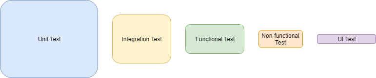

Software Engineering
DevOps
DevOps culture aims to achieve efficiency in Software Development Life Cycle. Areas to improve in SDLC will differ by organizations but will generally include
- Deliever busniess requirement in agile fashion
- Reduce time to deploy
- Fast reponse to errors
- Robust security control
- Achieve target reliability
DevOps qualifications
- Branching strategy (Git flow, Github flow)
- Deployment and release strategy (Blue/Green, Canary, Dark Launch)
- Configuration (Salt, Ansible)
- Provisioning (Terraform)
- Containerization (Docker)
- Cloud computing (GCP, Azure, AWS)
- Container orchestration (Kubernetes)
- CI/CD, SDLC (Jenkins)
- Scripting (Bash, Python, Groovy)
- Code build (Maven, npm, gradle)
- Security (SonarQube, Veracode, TLS/SSL, AD/LDAP)
- 1. Cloud
- 2. Continuous Integration
- 3. Continuous Delivery
- 4. Microservice-centric architecture
- 5. Test Automation
- 6. Infrastructure/Configuration as Code
- 7. Continuous Monitoring
- 8. Release strategy
- 9. Security
- 10. Scaliability and Reliablity
- 11. Network
- 12. Agile
- 13. DevOps Culture and Metrics
- 14. DB Basic
- 15. Pipelining
- 16. Message vs. Event
1. Cloud
Compute Power (three approaches)
- VM : Physical Hardware -> Operating System -> Hypervisor controller -> VM (App, OS, Virtual Hardware)
- Container : Physical Hardware -> Operating System -> Container Engine -> Container (App, dependencies)
- Serverless : Physical Hardware -> Operating System -> Serverless Runtime -> Function
4 types of computing resource management reponsibility by the users
- On-premises : Networking / Storage / Servers / Virtualization / OS / Middleware / Runtime / Data / Application
- Infrastructure as a Service : OS / Middleware / Runtime / Data / Application
- Platform as a Service : Data / Application
- Software as a Service : Everything is managed by Cloud Provider
Characteristics of cloud native
- Lightweight APIs
- Containers as standard deployment format
- Microservices
- Security at scale (Ex. Security tools provided by the Vendor)
- Reliability (Ex. Fully managed DB with high availability)
- Fast innovation (Ex. Serverless scales without managing infrastructure)
2. Continuous Integration
Continuous Integration means fast and automated feedback whenever there is code change

Continuous Integration may include
- builds
- unit test
- static analysis
- dynamic analysis
- package
3. Continuous Delivery
Continuous Delivery means fast deployment of new features to production
Continuous Delivery requires
- Externalized Configuration
- Automated tests
- Short build time (Failing slow tests!)
- Isolated and small pipeline steps
- Modularized code-base and parallel builds
4. Microservice-centric architecture
Example migration pattern from legacy system to modern architecture

Monolithic
- All components of application are colocated within a single unit
- Tied to a single technology stack
- Data schema updates can be difficult since entire business logic shared a single DB
- Difficult to scale services independently
Microservice
- Small, independent, and loosely coupled, thus can be deployed and scaled independently
- Impact of bugs from each component can be limited
- Each service is typically responsible for its own data
- Managing dependencies between components can be challenging (Ex. features of component A depends on features of component B)
Serverless
- PaaS where business logic runs as functions
- Executions are event driven (http request, schedule, messages added to a queue, DB events, etc)
- Pros: only charged for what is used, automatic scaling
- Cons: there are execution timeouts of functions for each cloud provider, high frequency exeuctions can be cheaper in VM than in serverless
5. Test Automation
- Unit test - test each method/function
- Integration test - test all components/modules of application togerther
- Behavior/Functional test - test business logic
- Non-Functional test - test roll-back, roll-forward, performance/load/stress, penetration, compliance, etc
- User Acceptance test - test user interface
Volumn of each test should be the following
- Because unit tests are for each method/function, there is no limit on how many tests you should have
- Integration/Functional tests should have enough size to catch potential errors at earlier stage
- UI tests will however frequently be modified based on changes on application layout, so this test should be small
6. Infrastructure/Configuration as Code
Infrastructure as Code
- No changes via GUI
- No live modification of instance (Immutable Server) - automating provisioning and recovery
- Versioning every infrastructure changes - making infrastructure reproducible
Configuration as Code
- Idempotency - operation results in the same outcome each time we apply
7. Monitoring
- Hook the test: Not only monitor availablity of services and resource comsumption, also periodically run tests to catch potential errors early
- Auto-correction upon finding problems: bring up the services that are down, clean up disk space by removing tmp files, safe or hard restart the server to clear memory, etc
Dickerson hierarchy of reliability
- monitoring: understand what is running in production. relibility is measured from customer perspective (there is no difference between system failing due to code bug or scaling issue from customers' point of view)
- incident response: respond with urgency, rather than react. focus on clear communication and make information accessible
- post-incident review: this is for pure learning purpose. it must be blameless. it is not document or report. understand that human errors do happen but they are not the cause of failures but symtom of larger problems
- test and release procedures:
- capacity planning:
- development:
- product:
8. Release strategy
Blue-Green
- Deployment strategy to avoid downtown during deployment
- Using IaC, deploy new instance "Green" (existing instance will be called "Blue")
- Run tests on Green instance
- Make "Green" the production instance - switch traffic from Blue to Green by re-mapping DNS to Green's IP address, remove Blue from load-balancer and add Green, etc
Carnary
- Similar to Blue-Green but redirect only subset of users instead of all users (choose users who are more active, etc)
- Both Blue and Green would be up during this time
- Great way to do capacity testing on new instance (can always roll-back by redirecting users to old instance)
- Management of multiple versions of Software is required
Dark-launching
- releasing production-ready features to subset of users prior to full release
- Feature toggle - run specific part of code based on configuration stored online
- Turn on features only for subset of users before releasing features to everybody
9. Security
SSL (Secure Sockets Layer)
- Ensure that all data passed between Web server and Browsers remain private
- Web server creates private and public Key
- User submits Certificate Signing Request (CSR), which includes public key, to Certification Authority. CA then will issue SSL Certificate
- Web server will match user's SSL Certificate to its private Key
- When Broswer connects to secure site, it will check whether SSL Certificate is not expired, and it is isseud by Certification Authority that Browser trusts, and it is being used by the website for which it has been issued
SSL handshake
- Client hello - client to server with TLS version
- Server hello - server to client with configuration it picked
- Server key exchange message - server to client with required information to generate pre-master secret
- Certificate request - server to client with certificate type, algorithm, and authorities
- Client certificate - client to server with certificate chain
- Client key exchange message - client to server so that a common key can be generated. Both sides then generate a master secret using pre-master secret, which is then used to generate symmetric key to encrypt session data
A layered approach to security
- Data : attackers are always after this
- Application : free of vulnerabilities, application secrets in a secure storage medium
- Compute : secure access to VMs, implement endpoint protection, keep systems patched and current
- Networking : deny by default, implement secure connectivity to on-premises networks, restrict inbound internet access
- Perimeter : use distributed denial of service (DDoS) protection, use perimeter firewalls to identify malicious attacks
- Identity and access : use SSO and multi-factor authentication
- Physical security : access to physical data centre with compute machines
Examples of security breaches and attacks
- Data : Exposing an encryption key or using weak encryption
- Application : Malicious code injection and execution. For example, SQL injection and cross-site scripting (XSS)
- Compute : Malware executing malicious code to compromise system
- Networking : Unnecessary open ports to the Internet. For example, leaving SSH or RDP open to virtual machines to leading brute-force attacks against your systems
- Perimeter : Denial-of-service (DoS) attacks
- Identity and access : Exposed credentials and toxic combinations of permissions and authorization
- Physical security : Unauthorized access to facilities
Authentication vs Authorization
- Authentication : process of establishing identity of a person
- Authorization : process of establishing what level of access an authenticated person has
Authentication strategy
- Single sign-on : access across applications is granted to a single identity/user, simplifying security model
- Multi-factor authentication : requires two or more elements for full authentication
Encryption
- Encryption : process of making data unreadable and unusable to unauthorized viewers
- Symmetric encryption : uses the same key to encrypt and decrypt the data
- Asymmetric encryption : uses public key and private key pair. Can use one key to encrypt but need both keys to decrypt. Ex. Transport Layer Security (TLS) used in HTTPS
Security concerns
- Input and outputs : Always validate input. Always use parameterized queries. Always encode your output
- Key Vault : Store connection strings, secrets, passwords, certificates, access policies, file locks, and automation scripts
- Framework : For example, Java/Javascript. Keep them updated
- Dependencies : Track vulnerabilities on your 3rd party dependencies
Active Directory - directory service implementation that provide authentication, group and user management, policy administration, etc. It supports both Kerberos and LDAP. It also provides SSO
LDAP (LightWeight Directory Acess Protocol) - open protocol used for directory service authentication
Relationship between AD and LDAP is similar to Apache and HTTP
10. Scaliability and Reliablity
Scaling
- Compute load patterns - consistent growth, constantly fluctuating loads, cyclical loads, unpredictable bursts
- Scale sets - load balancer distributes requests across VMs. Uses health probe to determine availability of each VM by pinging it
- Scaling up - adding more resources to a single instance (vertical scaling)
- Scaling out - addition of instances (horizontal scaling)
Strategies to achieve scalability and performance
- Data partitioning - data partitions can be managed and accessed separately
- Caching - store frequently used data for fast retrieval. could be placed at database or application layer
- Autoscaling - dynamically allocate resources to match performance requirements
- Background jobs - tasks such as batch jobs, intensive processing tasks, and long-running processes should run as background jobs, decoupled from applicatio UI to minimize load
- Messaging - requests can continue to flow-in without error if application can’t keep up
- Scale units - define units for scaling
Architecting for availability
- Recovery point objective - Maximum duration of acceptable data loss. For example, 30 minutes of data or four hours of data
- Recovery time objective - Maximum duration of acceptable downtime
- Design backup, restore, replication, and recovery capabilities based on above
11. Network
Load balancing
- Use of a dedicated instance (or a pair of instances) to dispatch incoming requests to back-end servers
Benefites
- Throughput is improved by parallel processing
- Yield higher availability
- SSL offload - client connects to load balancer via SSL, but redirect requests to servers are made via unencrypted HTTP to reduce load on the servers
- Caching - load balancer can cache popular requests
Serving response back
- Proxing - load balancer receives response from backend and relays it back to the client
- TCP Handoff - server sends response directly to the client
Types
- Equitable dispatching - uses simple round-robin algorithm to distribute traffic evenly between all nodes. For example, Elastic Load Balancer (ELB) of AWS
- Hash-based distribution - requests from the same client for the duration of session are directed to the same server every time by hashing metadata. Pros - store session data in memory than shared data storage like database or Redis cache. Cons - caching work causes small latency. For example, Azure Load Balancer
FQDN (Fully Qualified Domain Name)
- Complete domain name of computer, host, or internet
- Ex. www.github.com - [hostname].[domain].[tld (top-level-domain)]
- When connecting to a host, FQDN must be specified. Then, DNS server finds IP address from the hostname looking at DNS table
Reverse proxy
- Proxy sits on top of clients - used for blocking certain contents (servers are freely accessible through internet)
- Reverse proxy sit on top of servers - used for protection from attacks and SSL encrypting (clients can freely connect to internet)
- Can act as load-balancing but is also useful when there is a single server to increase security
Content delivery network
- Servers closest to the geographic location of users visiting the website responds
- Servers at different geographic locations (CDN) cache the content of original server
- CDN communicates to the original server to deliver contents that have not been cached
12. Agile
Waterfall
- Emphasis on planning to come up with accurate estimates on deliverables
- Fixed deliverables in each phase
- Test and release beome major events in each phase
Agile
- Allows deliverables to move in/out from each sprint (as long as total story points remain the same)
- Test and release happen in much greater frequency for each sprint
- Backlogs are refiend 2-3 sprints ahead and team agrees on each item
Agile Manifesto
- Individuals and interactions
- Working software
- Customer collaboration
- Responding to change
13. DevOps Culture and Metrics
Goal is to achieve efficiency (more outputs with the same amount of time, which translates to value for the organization)
These are some characteristics of DevOps culture
- There are standards of technologies (tools and programming languages) used across the organization
- Teams across the organization have the same sprint cadence
- All members in the team are participating in code reviews, not just few individuals
- Epics are typically delivered in every quarter and all stories and tasks are tied to epics
- All requirements are mapped to branches of code repository
- code is released on planned basis via "fix version"
- Stories and Tasks marked as either Done or Not Done at the end of each sprint
- Standard branching strategies such as git and/or github flows are used
DevOps Metrics
- Deployment frequency and speed
- Size (amount of stories and tasks) delievered in each sprint
- Lead time: time from starting to work on a feature to deploying it in production
- Time from when errors are detected to when they are resolved
- Number of people involved in deployment
- Number of errors found in production
14. DB Basic
Delete Vs. Truncate
- Truncate - DDL (Data Definition Language), does not require commit to make the change permanent, deleted rows cannot be rolled back, always removes all rows from the table (table structure remains intact)
- Delete - DML (Data Manipulation Language), requires commit to make the change permanent, "where" clause can be used
DB indexing
- Applying indexing on a field creates a data structure holding field value and pointer
- Data structure gets sorted so that search time can be O(logn) with binary search
- Fields with lots of duplicate values degrade benefits of indexing
Data types
- Structured - relational data
- Semi-structured - ymal, json, xml
- Unstructured - photo, video, audio, text
Transaction (ACID)
- Atomicity - either all is done or none is done
- Consistency - data is consistent before and after transaction
- Isolation - trasaction doesn't get affected by other transactions
- Durablility - transactions are permanently saved
15. Pipelining
There are few principles when build a good pipeline for large organizations
- Multiple pipelines to deliver each business case is better than one pipeline ruling the whole Enterprise. One pipeline can become a single point of failure. Moreover, product owner of backlog needs to adhere everyone's concern in the Enterprise, which become an impossible task
- Speed is the key. Complex and over-engineered pipeline increases the duration of feedback loop that can defeat the purpose of automation
- Open-source the code. One team owning private repositories of pipeline implementation puts them at indisputable position
- Minimize tooling. Be mindful that each tool put into the pipeline increases complexity and reduces speed
16. Message vs. Event
- Message - used when communication needs guarantee to be processed. Contains raw data.
- Event - used for broadcasting communications (lighter than message). Has publishers and subscribers
1. How to load a linux VDI into Virtual Box
- Download the latest VDI (64bit) from https://www.osboxes.org/centos
- From Virtual Box, create a new VM by pointing to the VDI downloaded
- Start the machine
- Log into the machines using the password "osboxes.org"
- Complete the OS setup
- Open the terminal and type "ip addr show" (Note the ip address in red box)
- From Virtual Box, go to File->Preferences->Network. Clicking "Add" Icon will make "NatNetwork" show up
- Click "Edit" Icon. From "Port Forwarding", add Rule as following (Note the IP found from above steps)
- From Machine Settings->Network, choose the name "NatNetwork"
- SSH into your vm by ssh -p 2222 root@127.0.0.1. Password should be "osboxes.org"
- Turn off your machine
- Try starting VM headless /C/Program\ Files/Oracle/VirtualBox/VBoxManage startvm RHEL7 --type headless
- To turn off VM headless /C/Program\ Files/Oracle/VirtualBox/VBoxManage controlvm RHEL7 poweroff --type headless


2. Port mapping (8080) from Virtual machine to local machine
- From Port Forwarding screen, add Rule 2. Use similar approach for other ports

3. Enabling copy and paste between local machine and VM
- From Machine Settings->General, Select "Bidirectional"
4. Install dependencies (Ubuntu)
# Enabling ssh from local machine to virtual machine
sudo apt update
sudo apt upgrade
sudo apt install openssh-server
sudo systemctl status ssh# Install docker
# Create a file at /etc/apt/sources.list.d/docker.list
# And add this line: deb [arch=amd64] https://download.docker.com/linux/ubuntu bionic stable
sudo apt-get install apt-transport-https ca-certificates curl gnupg-agent software-properties-common
curl -fsSL https://download.docker.com/linux/ubuntu/gpg | sudo apt-key add -
sudo apt update
sudo apt-get install docker-ce docker-ce-cli containerd.io1. Git flow
- master - represent the state of production
- release - branch to perform release. Must be merged into both develop and master branches
- develop - branch for active development. All features branches must be cut from and merged to this branch
- feature - branch for each developer working on a story/task. Developers should regularly pull from develop branch to keep feature branches up to date
- hotfix - branch to quickly apply changes to master branch without going through full flow. Must be merged into both master and develop branches
2. Useful git commands
git remote add origin [remoteUrl] # make the local repository aware of the remotegit config --list # show the current git config
git config --global user.name # add name
git config --global user.email # add email/code>git status # show files that have added, modified, and deleted
git add -A # move files to "staged"
git commit -am <message> # move files to "commited"/code>
git push origin <branch> # apply your changes to a particular branch on remote repositorygit pull origin <branch> # pull code from a particular branch on remote repository into your local workspace
git checkout -b <branch> # create a new branch whose code base will be your local workspace/code>
git checkout <branch> # check out code base from a particular branchgit branch -d <branch> # delete a particular branch from your local
git push origin -d <branch> # delete a particular branch from remote repository
git tag -d <tag> # delete a tag from your local
git push origin -d <tag> # delete a tag from remote repository/code>git fetch # update tracking of remote branches
git fetch --prune # remove local branches the do not exist in remote
git branch -a # display local and remote branchesgit reset --hard <commit_hash> & git push -f origin [branch] # revert to previous commit in the remote
git fetch --all && git reset --hard origin/[branch_name] # force overwrite local with remote3. Git concepts
git add # move files from "untracked/modified" state to "staged" state
git commit # move files from "staged" state to "committed" stategit fetch # gather commits from remote that don't exist in local
git merge # integrate commits to your branch
git pull # git fetch + git mergebranch # a version of code
git cherry-pick # get a commit from one branch and integrate to another branch
HEAD # last commit of current branch4. Squashing commits
When there are too many commits, it may be hard for other people to review your pull requests. Squashing commits comes handy
git log --oneline # search your commit history and pick the one you want to squash commits from
git rebase -p -i <commit_hash>
# nano editor will open. Use reword/pick/squash to specify what you want to do for each commit. Ctrl-O & Ctrl-T will write your changes
git log --oneline # observe that commits have been squashed
git commit --amend
# nano editor will open. Enter new commit message. Ctrl-O & Ctrl-T will write your changes
git push -f origin <branch> # finally push the changes to your branch# How to handle "Cannot 'squash' without a previous commit error"
# Rather than using pick "p", use reword "r" such that
r <commit_hash> <commit_message>
s <commit_hash> <commit_message>
s <commit_hash> <commit_message>
s <commit_hash> <commit_message>
s <commit_hash> <commit_message>
# Then, rename the first commit5. Fork vs Clone
Fork - server side copy of repository
Clone - local copy of repository in a server (include history and branches)
6. Fix corrupt git repository
rm -rf .git
git init
git remote add origin <clone_url>
git fetch
git reset origin/masterPython
1. Python Basic
Python is installed (if Unix) at /usr/local/bin/python3.8
No type checking until runtime (dynamically typed)
Code gets compiled before getting executed (but there is no noticible compilation phase so we normally say it is interpreted language)
Written in C language and runs natively (Other variations include Jython, which is written in Java and runs on JVM)
REPL: Read -> Evaluate -> Print -> Loop
Numbers : Operators include // (division discarding fraction), % (remainder), ** (power)
String : type "str". immutable. can be indexed. can be sliced[a:b] where a is included, b is excluded
Lists : mutable. list.append(x), list.remove(x), list.count(x), len(list) method
Stack using list : use list.append(x) and list.pop()
Queue using list : inefficient. Instead use "from collections import deque" and deque.append(x) & deque.popleft()
Dictionary : key-value pair data structure
Range : To use range(1,10) as a list, do list(range(1,10))
Tuple : immutable
Set : no duplicate
Types : "int", "float", "None", "bool" (True/False)
Relational Operators : "==", "!=", etc
"break" keyword terminates the loop and jump to first statement after the loop
Shebang : identify which interpreter is used for the program. For example, #!/usr/bin/env python3
Value - equivalent content ("==" operator). Identity - same object ("is" operator)
Arguments are passed by object-reference (mutable objects can be modified)
Everything is object
built-in types : int, float, str, list, dict
packages - generally directories
modules - generally files
Syntactic sugar for normal function definition
lambda a, b: a+bStandard libraries : "math", etc
import module
from module import function
from module import function as alias
How to execute python script containing functions
if __name__ == "__main__":
function()How to read command line parameter
import sys
sys.argv[]2. PEP 8
PEP 8 is a guideline for best practices in writing Python code
1. Use 4 spaces per indention level. Observe "hanging" indentation
# Good
foo = long_function_name(var_one, var_two,
var_three, var_four)
# hanging indent example (no arguments in the first line of the function)
var = function(
arg_one, arg_two,
arg_three, arg_four)
# Bad
foo = long_function_name(var_one, var_two,
var_three, var_four)
# Good
def long_function_name(
var_one, var_two, var_three,
var_four):
print(var_one)
# Bad
def long_function_name(
var_one, var_two, var_three,
var_four):
print(var_one)2. Limit all lines to maximum 79 characters (72 for docstrings and comments)
3. Watch the line break rule for operators
# Good
income = (gross_wages
+ taxable_interest)
# Bad
income = (gross_wages +
taxable_interest)4. Imports should be on separate lines
# Good
import os
import sys
from subprocess import Popen, PIPE
# Bad
import sys, osOrder of imports should be (also there should be line breaks between each type of import)
- Standard library imports
- Related third party imports
- Local application/library specific imports
Wildcard imports should be avoided
5. Avoid unnecessary whitespace
# Good
spam(ham[1], {eggs: 2})
# Bad
spam( ham[ 1 ], { eggs: 2 } )
# Good
x = 1
y = 2
long_variable = 3
# Bad
x = 1
y = 2
long_variable = 3
# Good
i = i + 1
submitted += 1
x = x*2 - 1
hypot2 = x*x + y*y
c = (a+b) * (a-b)
# Bad
i=i+1
submitted +=1
x = x * 2 - 1
hypot2 = x * x + y * y
c = (a + b) * (a - b)
# Good
if x>5 and x%2==0:
print('x is larger than 5 and divisible by 2!')
# Bad
if x > 5 and x % 2 == 0:
print('x is larger than 5 and divisible by 2!')
# Good
def complex(real, imag=0.0):
return magic(r=real, i=imag)
# Bad
def complex(real, imag = 0.0):
return magic(r = real, i = imag)6. Comments should be complete sentences with first character capitalized. Don't use inline comments to explain obvious fact
Doc string shall look something like
"""Retrive and print words from URL
Usage:
python3 words.py <URL>
"""
def fetch_words(url):
"""Fetch a list of words from URL.
Args:
url: the URL of document
Returns:
A list of strings containing words from the document
"""7. Naming convention
- never use l, O, I as variable names
- classname should be CapWords (same convention should be used for Exceptions)
- functions and variables should be all lowercase separated by spaces
- leading underscore is for non-public method only
- constants should be all uppercase separated by spaces
8. Programming convention
# Good
if foo is not None:
# Bad
if not foo is None:
# Good
def f(x): return 2*x
# Bad
f = lambda x: 2*xUse ''.startswith() and ''.endswith() instead of string slicing
# Good
if isinstance(obj, int):
# Bad
if type(obj) is type(1):For sequences, (strings, lists, tuples), use the fact that empty sequences are false
# Good
if not seq:
# Bad
if len(seq):
# Good
if greeting:
# Bad
if greeting == True:
if greeting is True:9. Line breaks
Surround top-level functions and classes with two blank lines
class MyFirstClass:
pass
class MySecondClass:
pass
def top_level_function():
return NoneSurround method definitions inside classes with a single blank line
class MyClass:
def first_method(self):
return None
def second_method(self):
return None10. Spanning multiple lines
x = 5
if (x > 3 and
x < 10):
# Both conditions satisfied
print(x)string = "I am a long long long long long long long long long" \
" long long long long string."Anaconda
1. Setup Environment
From Anaconda Navigator
2. Delete Kernel
# From "Anaconda Prompt"
jupyter kernelspec list
jupyter kernelspec uninstall [unwanted-kernel]Groovy
1. Groovy Basic
// Groovy common imports
import com.cloudbees.groovy.cps.NonCPS
import groovy.json.JsonBuilder
import groovy.json.JsonOutput
import groovy.json.JsonSlurper
import groovy.json.JsonSlurperClassic
// Groovy commenting
/**
* Description about the method
* @param param1 description about param1
* param2 description about param2
* @return return value
*/
// "NonCPS" annotation
// This annotation will tell Groovy not to Serialize the method. During the code execution, unserialized code may not be interruptable.
// This annotation is used for example when a method is called instande a constructor, when working with file stream, etc
// Groovy map example
Map map = [
key: [
subkey1: "value"
subkey2: [
subsubkey1: "value",
subsubkey2: "value"
]
]
]
// Initialize a map
Map map = [:]
// Loop through a list
for (i in list) {
// do something with "i"
}
// Loop through a map
map.each {
// do something with "it" (for example, "it.key" and "it.value")
}
// Find the value by key in a map
map.find { it.key.toString().trin() == "key" }?.value
// Find files in the current directory
findFIles(glob: '*.yaml')
// Convert YAML to JSON
def absolutePath = "absolute path of the YAML file"
def fileInYaml = readYaml file: absolutePath
def fileInJson = new JsonBuilder(fileInYaml).toPrettyString()
// Check if file exists
def absolutePath = "absolute path of the file"
File file = new File(absolutePath)
file.exists()
// Convert JSON string to JSON object
jsonObject = new JsonSlurperClassic().parseText(jsonString)
// Convert JSON object to JSON string
jsonString = new JsonBuilder(jsonObject).toPrettyString()
// Create a file with context
wtiteFile(file: "fileName", text: fileContent)1. Terraform with Google Cloud
Commands to compile and provision infrastructure with Terraform
- terraform init
- terraform plan
- terraform apply
- terraform destroy (this command tears down instances deployed to GCP)
2. Example: main.tf
provider "google" {
credentials = "${file("../../googlecloud/credential.json")}"
project = "${var.project}"
}
module "vpc" {
source = "../modules/global"
var_env = "${var.env}"
var_company = "${var.company}"
var_region_name = "${var.region_name}"
var_ue1_public_subnet = "${var.ue1_public_subnet}"
var_ue1_private_subnet = "${var.ue1_private_subnet}"
}
module "ue1" {
source = "../modules/ue1"
var_env = "${var.env}"
var_company = "${var.company}"
var_region_name = "${var.region_name}"
var_ue1_public_subnet = "${var.ue1_public_subnet}"
var_ue1_private_subnet = "${var.ue1_private_subnet}"
network_self_link = "${module.vpc.vpc_self_link}"
subnetwork1 = "${module.ue1.public_subnet_name}"
}Source code is available at main.tf
3. Example: vpc.tf
resource "google_compute_network" "vpc" {
name = "${format("%s","${var.var_company}-vpc")}"
auto_create_subnetworks = "false"
routing_mode = "GLOBAL"
}
resource "google_compute_firewall" "allow-internal" {
name = "${var.var_company}-fw-allow-internal"
network = "${google_compute_network.vpc.name}"
allow {
protocol = "icmp"
}
allow {
protocol = "tcp"
ports = ["0-65535"]
}
allow {
protocol = "udp"
ports = ["0-65535"]
}
}
resource "google_compute_firewall" "allow-http" {
name = "${var.var_company}-fw-allow-http"
network = "${google_compute_network.vpc.name}"
allow {
protocol = "tcp"
ports = ["80"]
}
target_tags = ["http"]
}
resource "google_compute_firewall" "allow-bastion" {
name = "${var.var_company}-fw-allow-bastion"
network = "${google_compute_network.vpc.name}"
allow {
protocol = "tcp"
ports = ["22"]
}
target_tags = ["ssh"]
}Source code is available at vpc.tf
4. Example: network.tf
resource "google_compute_subnetwork" "public_subnet" {
name = "${format("%s","${var.var_company}-${var.var_env}-${var.var_region_name}-pub-net")}"
ip_cidr_range = "${var.var_ue1_public_subnet}"
network = "${var.network_self_link}"
region = "${var.var_region_name}"
}
resource "google_compute_subnetwork" "private_subnet" {
name = "${format("%s","${var.var_company}-${var.var_env}-${var.var_region_name}-pri-net")}"
ip_cidr_range = "${var.var_ue1_private_subnet}"
network = "${var.network_self_link}"
region = "${var.var_region_name}"
}Source code is available at network.tf
5. Example: instance.tf
resource "google_compute_instance" "vm1" {
name = "k8s-master"
machine_type = "n1-standard-2"
zone = "${format("%s","${var.var_region_name}-c")}"
tags = ["ssh","http"]
boot_disk {
initialize_params {
image = "centos-7-v20180129"
}
}
metadata {
foo = "bar"
}
network_interface {
subnetwork = "${google_compute_subnetwork.public_subnet.name}"
access_config {
// Ephemeral IP
}
}
provisioner "remote-exec" {
# You cannot open interactive session with "sudo -i". You must also run all yum commands with -y flag
inline = [
"sudo yum install ansible -y"
]
connection {
host = "${self.network_interface.0.access_config.0.nat_ip}"
type = "ssh"
user = "${var.ssh_user}"
private_key = "${file("~/.ssh/id_rsa")}"
}
}
provisioner "local-exec" {
# Environment variable can be used inside ansible playbook
environment {
PUBLIC_IP = "${self.network_interface.0.access_config.0.nat_ip}"
HOSTNAME = "k8s-master"
ANSIBLE_HOST_KEY_CHECKING = false # This is must to avoid the error "The authenticity of host can't be established"
}
# You must install "ansible" on the machine where terraform-ansible suites get executed
# Add "-vvv" for verbose output
command = "ansible-playbook -u ${var.ssh_user} --private-key ~/.ssh/id_rsa ../ansible/k8s-master.yaml -i $PUBLIC_IP,"
}
}Source code is available at instance.tf
6. Install Terraform (version 0.11.13) in CentOS
- yum install -y zip unzip
- wget https://releases.hashicorp.com/terraform/0.9.8/terraform_0.11.13_linux_amd64.zip
- unzip terraform_0.11.13_linux_amd64.zip
- mv terraform /usr/local/bin/
- terraform --version
7. Terraform with GCP - common errors
- "Invalid JWT: Token must be a short-lived token (60 minutes) and in a reasonable timeframe - This happens when the date and time of OS is out of sync. Run date +%T -s "10:13:13" [10: Hour (hh) 13: Minute (mm) 13: Second (ss)] to update it.
Salt
1. Salt API
Test to see if Salt API is callable
salt -a pam \* test.pingAdd credential(s) to call Salt API
/etc/salt/master.d/auth.confRestart Salt master
sudo service salt-master restartCheck logs
/var/log/salt/masterCheck minion configuration
/etc/salt/minion.d/minion.conf1. Designing Jenkins Infrastrue
It is advised to structure Jenkins infrastructure with Master and Agents
Jenkins master should have the following
- Seed job that runs DSL scripts
- Plugins
Jenkins master must have enough disk space to host growing number of job and plugins. The data on Jenkins master is critical and must be backed up regularly. If Jenkins master is hosted on a virtual machine of Cloud, it is wise to host jenkins direcotry on a cinder volumn so that even if the virtual machine is lost, data is still recoverable.
Jenkins agents should have the following
- workspaces where files will be pulled-in and jobs will run
- Tools to run the jobs such as maven, npm, etc
The data on Jenkins agents is not critical because they can always be pulled-in from the job configurations. And workspaces can always be deleted and recreated. Thus, disk space and back up of data are less important on Jenkins agents.
Jenkins agents will be Linux (Redhat, JBoss, etc) and/or Windows (Windows Server, etc). And Jenkins jobs will be configured to run on a specific agent. However, pipeline jobs can run each of their steps on a different agent.
2. Setting up Jenkins master on Linux
Assuming you've downloaded "jenkins.war", installed it, and are able to access Jenkins UI via [your_server_ip]:8080, there are other steps you need to follow to complete the setup
- Specify the port in which Jenkins master should talk to its agent. Jenkins->Configure GLobal Security->TCP port for JNLP agents-> Fixed:8443
- Set the # of executor of master at 0 so that no builds run on master. Jenkins->Nodes->master-># of executors:0
- Configure authentication strategy. For exmaple, Jenkins->Configure Global Security->Security Realm: Active Directory, Authorization:Role-Based Strategy
3. Setting up Jenkins agent on Linux
Agents are necessary to distribute work load
- You can specify #of executors, directory of workspace, way to launch the agent
1. Docker basic
Container - isolated environment to build/run software packages (container image is immutable)
Container benefits
- Efficient use of hardware since they run w/o VM
- Isolation
- Application portability and ease of delievery
Containters are highly configured processes (it is not lightweight). They leverage kernal features to isolate processes and shared OS kernal at the same time. cgroupd controls resources it can consume and namespaces control what process can see
Each layer represents each instruction in Dockerfile. all layers except the last one is read-only. docker image is consisted with a series of layers
Docker lifecycle
- CREATED -> (docker run) -> RUNNING -> (docker rm) -> REMOVE
- RUNNING -> (docker stop) -> STOPPED, STOPPED -> (docker restart) -> RUNNING
- RUNNING -> (docker pause) -> PAUSED, PAUSED -> (docker unpause) -> RUNNING
Kernel
- Namespaces - isolation (like hypervisor for VMs) like pid, net, mnt, ipc, user
- Control groups - setting the resource limits (for each container, for example)
- Containers, although isolated, shared the single OS Kernel
- Containers get their own namespaces
Docker Enginel
- Docker Engine - client-server implementation where they run on the same host and communicate via REST API
- Docker client - provides docker CLI
- Docker server - daemon named dockerd, responds to client request
2. Useful Docker commands
docker build -f [DockerfileName] -t [DockerImageName] . # builds Dockerfile and create new image
docker ps -a # see all containers in all states
docker run -d [image] # run container in background
docker stop $(docker ps --latest --quiet) && docker rm $(docker ps -a -f status=exited -q) && docker ps -a # Stop all images, remove all images, and show images
docker exec -it [container_name] bash # login to the container
docker exec -it $(docker ps --latest --quiet) bash # login to the latest container
docker rm $(docker ps -a -f status=exited -q) # remove all exited containers
docker run -v [dir1]:[dir2] -u 0 -dit [container_name] # map directories
--publish 80:8080 # flag to map container port to host port
# Assuming docker-compose.yml exists
docker-compose up # Create images and run
# Recreate images and run
docker-compose stop $CONTAINER
docker-compose rm -f $CONTAINER
docker volume prune -f
docker-compose create $CONTAINER
docker-compose start $CONTAINER
docker inspect [container_name] # display container information
docker inspect --format='{{range .NetworkSettings.Networks}}{{.IPAddress}}{{end}}' # get the container IP
# Investigate docker logs
docker logs -f [container_name]
journalctl -u docker.service3. Writing Dockerfile
- FROM - pulls base image
- WORKDIR - sets current working directory in container
- COPY - copies files from host to container
- RUN - executes commands in container
- EXPOSE - open ports in container
- ADD - similar to copy but has extra features such as local-only tar extraction. Should not be used fetch packages from remote URLs due to creating unnecessary layers (use wget and curl instead)
- ENV - environment variables that can be accessed in running applications
- ARG - environment variables that can be accessed in only during image creation
- ENTRYPOINT - allows configuring container that will run as an executable
- USER - set UID when running the image
4. Docker Examples
# EX1: Privision and configure MSSQL with docker
# Assume the following environment variables
# SQL_USER="sqladmin"
# SQL_PASSWORD="changeMe0!"
# SQL_SERVER="changeme.database.windows.net"
# SQL_DBNAME="mydrivingDB"
# Install sqlcmd
curl https://packages.microsoft.com/keys/microsoft.asc | sudo apt-key add -
curl https://packages.microsoft.com/config/ubuntu/20.10/prod.list | sudo tee /etc/apt/sources.list.d/msprod.list # Carefully watch out the ubuntu version you are using
sudo apt-get update
sudo apt-get install mssql-tools unixodbc-dev
docker pull mcr.microsoft.com/mssql/server
sudo docker run -e "ACCEPT_EULA=Y" -e "SA_PASSWORD=changeMe0!" -p 1433:1433 --name sql1 -h changeme.database.windows.net -d mcr.microsoft.com/mssql/server:2019-latest # Password must include uppercase, lowercase, number, and special character
sudo docker exec -it sql1 "bash"
/opt/mssql-tools/bin/sqlcmd -S localhost -U SA -P "changeMe0!" # This should lead to sqlcmd command prompt
CREATE DATABASE mydrivingDB
# Find container IP of MSSQL container
SQL_CONTAINER_IP=$(docker inspect -f '{{range.NetworkSettings.Networks}}{{.IPAddress}}{{end}}' sql1)
# Test connecting to SQL server outside the container
/opt/mssql-tools/bin/sqlcmd -S $SQL_CONTAINER_IP,1433 -U SA -P "changeMe0!"
QUIT
# Assume there is an app running under container name <container_name>. How to connect to SQL DB from the app
docker run --network host -e SQLFQDN=$SQL_CONTAINER_IP,1433 -e SQLUSER=sqladmin -e SQLPASS=changeMe0! -e SQLDB=mydrivingDB <container_name>
5. Docker exit codes
- Code 0 - container does not have a foreground process attached
- Code 1 - there is an application error
- Code 137 - container received SIGKILL (docker kill)
- Code 139 - container received SIGSEGV (segmentation fault)
- Code 143 - container received SIGTERM (docker stop)
6. Configure Docker in Ubuntu
To use a private docker repository, add the following in /etc/docker/daemon.json
{
"insecure-registries": [<YOUR_REPO_ADDRESS_INCLUDING_PORT_NUMBER>]
}If you want to use secure repo with proper certificates, create this directory /etc/docker/cert.d/<YOUR_REPO_ADDRESS> and copy certificates to this directory
Do docker login <YOUR_REPO_ADDRESS>
Finally, issue sudo service docker restart
1. Pods
Single instance of running process in the cluster
- Can have one or more container
- Deploy Pod by writing manifest file and giving it to API Server
- Each pod has its own single IP
- Each container in a pod can talk via their own unique port
2. Services
Expose an application running on Pods as network service
- Let you access the application both from inside and outside
- IP, DNS, Port of Service never change
- Services are discovered by DNS
3. Deployments
Provides declarative updates for Pods and ReplicaSets
- Allow rolling updates and simple rollback
- Wraps Replica Set, which in turn wraps pods
4. Setup Kubernetes Master
sudo -i
hostnamectl set-hostname 'k8s-master'
exec bash
setenforce 0
sed -i --follow-symlinks 's/SELINUX=enforcing/SELINUX=disabled/g' /etc/sysconfig/selinux
firewall-cmd --permanent --add-port=6443/tcp
firewall-cmd --permanent --add-port=2379-2380/tcp
firewall-cmd --permanent --add-port=10250/tcp
firewall-cmd --permanent --add-port=10251/tcp
firewall-cmd --permanent --add-port=10252/tcp
firewall-cmd --permanent --add-port=10255/tcp
firewall-cmd --reload
modprobe br_netfilter
echo '1' > /proc/sys/net/bridge/bridge-nf-call-iptables
cat <<EOF > /etc/yum.repos.d/kubernetes.repo
[kubernetes]
name=Kubernetes
baseurl=https://packages.cloud.google.com/yum/repos/kubernetes-el7-x86_64
enabled=1
gpgcheck=1
repo_gpgcheck=1
gpgkey=https://packages.cloud.google.com/yum/doc/yum-key.gpg https://packages.cloud.google.com/yum/doc/rpm-package-key.gpg
exclude=kube*
EOF
yum install kubeadm docker -y
systemctl restart docker && systemctl enable docker
yum install -y kubelet kubeadm kubectl --disableexcludes=kubernetes
systemctl restart kubelet && systemctl enable kubelet
kubeadm init
mkdir -p $HOME/.kube
cp -i /etc/kubernetes/admin.conf $HOME/.kube/config
chown $(id -u):$(id -g) $HOME/.kube/config
export kubever=$(kubectl version | base64 | tr -d '\n')
kubectl apply -f "https://cloud.weave.works/k8s/net?k8s-version=$kubever"
kubectl get nodes
kubectl get pods --all-namespaces# From /etc/hosts
[ip] k8s-master
[ip] k8s-node1
[ip] k8s-node2
[ip] k8s-node35. Setup Kubernetes Node
Do this on each node. Replace [k8s-node-name] with appropriate node name
sudo -i
hostnamectl set-hostname '[k8s-node-name]'
setenforce 0
sed -i --follow-symlinks 's/SELINUX=enforcing/SELINUX=disabled/g' /etc/sysconfig/selinux
firewall-cmd --permanent --add-port=10250/tcp
firewall-cmd --permanent --add-port=10255/tcp
firewall-cmd --permanent --add-port=30000-32767/tcp
firewall-cmd --permanent --add-port=6783/tcp
firewall-cmd --reload
echo '1' > /proc/sys/net/bridge/bridge-nf-call-iptables
cat < /etc/yum.repos.d/kubernetes.repo
[kubernetes]
name=Kubernetes
baseurl=https://packages.cloud.google.com/yum/repos/kubernetes-el7-x86_64
enabled=1
gpgcheck=1
repo_gpgcheck=1
gpgkey=https://packages.cloud.google.com/yum/doc/yum-key.gpg https://packages.cloud.google.com/yum/doc/rpm-package-key.gpg
exclude=kube*
EOF
yum install kubeadm docker -y
systemctl restart docker && systemctl enable docker
yum install -y kubelet kubeadm kubectl --disableexcludes=kubernetes
systemctl restart kubelet && systemctl enable kubelet
systemctl enable docker.service && systemctl start docker.service kubeadm join --token [k8s-master-token] --discovery-token-unsafe-skip-ca-verification [k8s-master-ip]:64436. Write Deployment for Jenkins
"deployment.yaml". Replace [dockerhub_user] with appropriate username
apiVersion: extensions/v1beta1
kind: Deployment
metadata:
name: jenkins
spec:
replicas: 1
template:
metadata:
labels:
app: jenkins
spec:
containers:
- name: jenkins
image: [dockerhub_user]/jenkins-master
env:
- name: JAVA_OPTS
value: -Djenkins.install.runSetupWizard=false
ports:
- name: http-port
containerPort: 8080
- name: jnlp-port
containerPort: 50000
volumeMounts:
- name: jenkins-home
mountPath: /var/jenkins_home
volumes:
- name: jenkins-home
emptyDir: {}7. Write Service for Jenkins
"service.yaml"
apiVersion: v1
kind: Service
metadata:
=name: jenkins
spec:
type: LoadBalancer
ports:
- port: 80
targetPort: 8080
selector:
app: jenkins
---
apiVersion: v1
kind: Service
metadata:
name: jenkins-jnlp
spec:
type: ClusterIP
ports:
- port: 50000
targetPort: 50000
selector:
app: jenkins8. Deploy Jenkins master
Do this from Kubernetes master
- kubectl apply -f deployment.yaml
- kubectl create -f service.yaml
- kubectl get service
9. Deploy Jenkins agent
Do this from Kubernetes master
- kubectl cluster-info | grep master
- kubectl get pods | grep jenkins
- kubectl describe pod
Nexus
1. Nexus Architecture
Nexus is a tool used to store Software artifacts. It allows uploading and downloading artifacts by GUI and REST endpoint. There are two types of artifacts
- SNAPSHOT - this type of artifact is for temporarily storage whose retention period is usually 1 day. SNAPSHOT artifacts should be allowed to be overwritten. This is useful when developement team frequently builds their artifact and upload it to nexus to allow QA testing to commmence immediately
- RELEASE - this type of artifact is for permanent storage and it should not be overwritten. RELEASE artifacts are used during Continuous Delievery phase where it will deployed to many different environments before landing the Production
1. CD Command
1.1. CDPATH
export CDPATH=/etc
cd security
/etc/securityTo make this permanent, add "export CDPATH=/etc" to "~/.bash_profile" (also do "source ~/.bash_profile")
1.2. alias
alias ..5=../../../../../
cd one/two/three/four/five/six
cd ..5
pwd
one1.3. mkdircd
mkdircd /one/two/three
pwd
one/two/three1.4. "cd -" toogle between last two directories
1.5. "dirs" - display directory stack. "pushd" - push directory into stack. "popd" - pop directory from stack and cd to it
# Example: create tmp, do the work, and remove tmp
mkdir tmp && pushd
# do some work
popd && rm -rf tmp1.6. shopt -s cdspell
shopt -s cdspell
cd /etc/mall
pwd
/etc/mail2. Date
2.1. System date and time
date -s "01/31/2009 22:19:53"2.2. Set hardware date and time based on system date and time
hwclock --systohc –utc2.3. Format date and time
date
date --date='1970-01-01 00:00:01 UTC +5 hours' +%s
date '+Current Date: %m/%d/%y%nCurrent Time:%H:%M:%S'
date +"%d/%m/%Y"
date +"%A,%B %d %Y"2.4. Past date and time
date --date="1 day ago"
date --date="1 year ago"
date --date="yesterday"2.5. Future date and time
date --date="1 day"
date --date="1 year"
date --date="tomorrow"3. SSH
3.1. "ssh -V" : check ssh version
3.2. Login to remote
ssh -l [username] [ip]3.3. Debug ssh client session
ssh -v l [username] [ip]3.4. Creating public and private key pair. First, have Git installed in your machine
ssh-keygenYou can choose to have passphrase as well (which you need to remember when sshing into a remote machine)
Make sure to give 600 to id_rsa and 644 to id_rsa.pub and known_hosts
3.5. Refresh known_hosts
ssh-keyscan -H [IP_ADDRESS] ~/.ssh/known_hosts4. Linux
4.1. "grep [options] pattern [files]"
Use option -v to find all except the match
Use option -c to get # of line with match
Use option -i to ignore case
Use option -r to find matches recursively in files in directory
4.2. "find [pathnames] [conditions]"
find /etc -name "*mail*" # find files containing mail in /etcfind / -type f -size +100M # find files greater than 100Mfind . –mtime -2 # find files modified in last two daysfind / -type f -name *.tar.gz -size +100M -exec ls -l {} \; # list files greater than 100Mfind / -type f -name *.tar.gz -size +100M -exec rm -f {} \; # delete files greater than 100M4.3. Suppress output or error
cat file.txt > /dev/null # suppress outputcat invalid-file-name.txt 2> /dev/null # suppress error4.4. Convert uppercase to/from lowercase
tr a-z A-Z < file.txt # convert to uppercasetr A-Z a-z < file.txt # convert to lowercase4.5. Cut
cut -d: -f 1 file.txt # Display 1st field from colon delimited filecut -d: -f 1,3 file.txt # Display 1st and 3rd field from colon delimited filecut -d: -f1 /etc/passwd # Displays unix login names for all users in the systemfree | tr -s ' ' | sed '/^Mem/!d' | cut -d" " -f2 # Displays total memory available on the system4.6. Diff
diff -w file_old.txt file_new.txt4.7. Reboot the machine
sudo reboot5. PS
5.1. Change color of prompt
export PS1="\e[0;34m\u@\h \w> \e[m " # blue color (foreground), username, host and current directoryFor permanent change, in ~/.bash_profile
STARTCOLOR='\e[0;34m';
ENDCOLOR="\e[0m"
export PS1="$STARTCOLOR\u@\h \w> $ENDCOLOR"export PS1="\e[47m\u@\h \w> \e[m " # blue color (background), username, host and current directoryFor permanent change, in ~/.bash_profile
STARTFGCOLOR='\e[0;34m';
STARTBGCOLOR="\e[47m"
ENDCOLOR="\e[0m"
export PS1="$STARTFGCOLOR$STARTBGCOLOR\u@\h \w> $ENDCOLOR"6. Archive
6.1. zip {.zip file-name} {file-names}
zip var-log-files.zip /var/log/* # zip all files in /var/log/* into var-log-files.zip6.2. unzip var-log.zip
6.3. Compression
zip var-log-files-default.zip /var/log/* # level 6 - default high compression
zip -0 var-log-files-0.zip /var/log/* # level 0 - no compression
zip -9 var-log-files-9.zip /var/log/* # level 9 - highest compression6.4. Password protect
zip -P mysecurepwd var-log-protected.zip /var/log/*6.5. tar [options] [tar-archive-name] [other-file-names]
option c - create an archive
option v - verbose mode
option f - archive file name
option x - extract files from tar archive
option z - when dealing with tar.gz compressed file
option j - when dealing with tar.bz2 compressed file
tar cvf /tmp/file.tar /home/rieh # create tartar xvf /tmp/file.tar # extract tar7. Administration
7.1. Disk
n – new partition creation
d – delete existing partition
p - print partition table
w – write changes to the partition table
q – quit fdisk utility
fdisk /dev/sda # invoke fdisk (first step to create /dev/sda1 primary partition)mke2fs /dev/sda1 # format disk so it can be usedmount /dev/sda1 /home/database # mount partition to directorytune2fs -l /dev/sda1 # view the filesystem7.2. User and group
useradd rieh # add a userpasswd rieh # change user passwordgroupadd developers # add a groupusermod -g developers jsmith # add user to group7.3. Owndership and permission
chmod -fR [permission] [directory/file] # change permission on file/directorychown -fR [user/group]:[user/group] [directory/file] # change ownership of file/directory7.4. Access control
/etc/security/access.conf # Add user(s) or groups(s) to this file to grant access to the machine8. System
8.1. free [options]
m - displays values in MB
t - displays sum of physical and swap memory
o - hide buffers/cache line
8.2. top [options]
8.3. ps [options]
ps aux | more # display all processes running in system8.4. df [options] [name]
df –h # human readable format8.5. kill [options] [pids|commands]
8.6. Disk usage
du -sh ~du --max-depth=1 /[folder] | sort -n -r # find size of folders8.7. lsof
lsof | more # view all open files in systemlsof -i -P -n | grep LISTEN # find pid and kill them
kill -9 [pid]8.8. sar
sar –u # Display CPU statisticssar –d # Display disk IO statistics8.9. stat
netstat -tulnp | grep 8443 # find processes running on port 8443stat -c "%a &n" * # display stats of files9. Shell Scripting
9.1. Read user inputs
read USER_INPUT1 ; export USER_INPUT1
read -s USER_INPUT1 ; export USER_INPUT1 # make echoing user input unavailable9.2. Arguments
# $1, $2, $3, etc are used to read in arguments passed to shell script and functions9.3. Suppress output of pushd and popd commands
pushd () {
command pushd "$@" > /dev/null
}
popd () {
command pushd "$@" > /dev/null
}9.4. Curl
v – verbose output
s – suppress output
u - to pass in credentials
o – to write output to a destination
w '%{http_code}' – to get the http status code
curl [options] [URL] -X [GET/POST/PUT/DELETE] -H [Headers] -d [Data]echo $JSON_DATA | curl [options] [URL] -X [GET/POST/PUT/DELETE] -H [Headers] -d @- # if posting json data9.5. Function
function [function_name] () {
local [argument1]=$1
local [argument2]=$2
local [argument3]=$3
...
echo [ret_val] # this is the return statement
}9.6. Conditional
if [ "$variable" -eq 200 ]; then
# do something
else
# do othe thing
fiif [ -z "$variable" ]; then
# variable is null
fiif [ -z "$var1" -o -z "$var1" ]; then
# var1 or var2 is null
fiif [ "$variable" == "string" ]; then
# variable equals string
fi9.7. Current and parent directory (scripts can execute from different path, so absolute path is needed)
SCRIPT_DIR=$( cd "$(dirname "${BASH_SOURCE[0]}")" ; pwd -P )
PARENT_DIR="$(dirname "$SCRIPT_DIR")"10. Color
10.1. Types of colors in bash
printf "Foreground Regular\n"
printf "\033[31mI am Red\033[0m\n"
printf "\033[32mI am Green\033[0m\n"
printf "\033[33mI am Yellow\033[0m\n"
printf "\033[34mI am Blue\033[0m\n"
printf "\033[35mI am Magenta\033[0m\n"
printf "\033[36mI am Cyan\033[0m\n"
printf "\033[37mI am Light Gray\033[0m\n"
printf "Foreground Bright\n"
printf "\033[90mI am Dark Gray\033[0m\n"
printf "\033[91mI am Light Red\033[0m\n"
printf "\033[92mI am Light Green\033[0m\n"
printf "\033[93mI am Light Yellow\033[0m\n"
printf "\033[94mI am Light Blue\033[0m\n"
printf "\033[95mI am Light Magenta\033[0m\n"
printf "\033[96mI am Light Cyan\033[0m\n"
printf "Background Regular\n"
printf "\033[41mI am Red\033[0m\n"
printf "\033[42mI am Green\033[0m\n"
printf "\033[43mI am Yellow\033[0m\n"
printf "\033[44mI am Blue\033[0m\n"
printf "\033[45mI am Magenta\033[0m\n"
printf "\033[46mI am Cyan\033[0m\n"
printf "\033[47mI am Light Gray\033[0m\n"
printf "Background Bright\n"
printf "\033[100mI am Dark Gray\033[0m\n"
printf "\033[101mI am Light Red\033[0m\n"
printf "\033[102mI am Light Green\033[0m\n"
printf "\033[103mI am Light Yellow\033[0m\n"
printf "\033[104mI am Light Blue\033[0m\n"
printf "\033[105mI am Light Magenta\033[0m\n"
printf "\033[106mI am Light Cyan\033[0m\n"11. Python Integration
11.1. Virtual python environment
virtualenv -p python3 .env # create python3 virtual environment at .env directory
source .env/bin/activate
pip install -r [python_dependencies]11.2. Execute python
python [your_script.py] [--options] [arguments]12. Cron
minute (0 - 59) | hour (0 - 23) | day of the month (1 - 31) | month (1 - 12) | day of the week (0 - 6) [Sunday to Saturday]
22 5 * * 6 # 5:22AM every Saturday*/5 * * * * # every 5 minutes13. File
owner / grouup / all users
read(4) / write (2) / execute (1)
# For example, "chmod 640" gives read and write permission to the owner, read permission to the group, no permission to all others14. Process and Thread
Thread is an execution unit, which is a part of process. It is a unit of execution in concurrent programming. It can be managed by a scheduler
Process is an isolated execution entity, which does not share data. Creating process requires a separate system call. It has its own heap memory
Google Cloud Platform
How to provision GKE using Redhat7
# Update YUM with Cloud SDK repo information:
sudo tee -a /etc/yum.repos.d/google-cloud-sdk.repo << EOM
[google-cloud-sdk]
name=Google Cloud SDK
baseurl=https://packages.cloud.google.com/yum/repos/cloud-sdk-el7-x86_64
enabled=1
gpgcheck=1
repo_gpgcheck=1
gpgkey=https://packages.cloud.google.com/yum/doc/yum-key.gpg
https://packages.cloud.google.com/yum/doc/rpm-package-key.gpg
EOM
# Install the Cloud SDK
sudo yum install google-cloud-sdk
# Choose the project and region
gcloud init
sudo yum install kubectl
# You may get errors. Wait until Kubernetes API is enabled for the project. Then try this command again
gcloud container clusters create [CLUSTER_NAME]
gcloud container clusters get-credentials [CLUSTER_NAME]
# Delete the cluster after
gcloud container clusters delete [CLUSTER_NAME]From this point on, you can just do the following to provision/delete cluster
gcloud container clusters create [CLUSTER_NAME]
gcloud container clusters delete [CLUSTER_NAME]Load Balancer and Static IP
Provisioning GKE, Load balancer, Static IP, and Jenkins application
# Load balancer and static IP
gcloud container clusters create [CLUSTER_NAME]
# Reverve static IP for "jenkins-master" application
gcloud compute addresses create [INGRESS_GLOBLA_STATIC_IP_NAME] --global
kubectl apply -f deployment.yaml
kubectl apply -f service.yaml
kubectl apply -f ingress.yaml
# Wait about 10 mins until application comes up
# To delete ingress, IP, and cluster
kubectl delete ingress [INGRESS_NAME]
gcloud compute addresses delete [INGRESS_GLOBLA_STATIC_IP_NAME] --global
gcloud container clusters delete [CLUSTER_NAME]Network Basics
- Computers can connect to themselves via 127.0.0.1 (localhost)
- "ipconfig" file provides very useful information
- TCP allows multiple services to share the same physical computer via port
- 21 - file transfer (FTP)
- 22 - secure shell (SSH)
- 25, 110 - email (SMTP, POP3)
- 80 - web (HTTP)
- 443 - secure web (HTTPS)
- 993, 995 - secure email
- UDP is better suited for streaming media and online games